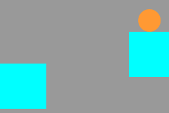

やりちらかす
思い出の中のゲームを再現したり創作って難しいねってなったりしてます。

王道2Dアクションの雛形。特に攻略要素はないです。
資料兼備忘録
| ミサキチ2D | ぐーたら。 |
| ぼだらん2 | とりあえず覚えてること載せとく。見る価値なし。作る気なし。 |
| JSが気になって夜しか眠れない | ぅゎょぅι゛ょっょぃ。 |
| JSテトリスのあしあと | プレイできるレベルのてとりすを作ったきろく。 |
| PythonWave | Pythonの波がきてる。乗るしかない，このビッグウェーブに。 |
プロフィール
出身
Thorn Castle
趣味
お家でごろごろ。
特技
ゲームの仕様の完コピ。資料ありきだけど。
ゲームミュージックの耳コピ。ピアノ編曲。
パクりばっかり。
そのた
あたまとけるほど好きなゲーム
- TGMシリーズ(ACEは除く)
- シャイニング・ソウル II
- Minecraft(Mod込み)
- Call of Duty Black Ops (Zombies)
- (次点)Borderlands 2
- Time Locker
各ゲームで講義開ける程度には好き。
好きなゲームのポイント
-
プレイヤーの操作不能時間を極力減らす設計をしている。
ターン制とかゲームである意味がほとんどないし，会話で止まったり，QTEとかのゴミクソ滅べばいいのに。それにインベントリ開いて時間止まるかっての。
-
敵にもFFが設定されてる。
そりゃ敵の撃った弾は目の前の味方にも当たるでしょ。あと敵対勢力とか熱いよね。敵の敵は～ってやつ。
そのくらい？アクションゲーとノベルゲーとかじゃ比較するポイントが違うからね。
畢竟，これは当たり前だよねってのができてないゲームが多すぎるんだよね。
好き嫌い
ビートまりおは好き、ヒャダインは無理。
junは好き。ryuはちげえ。
TAGは好き。U1はなし。
たこのおさるさん。